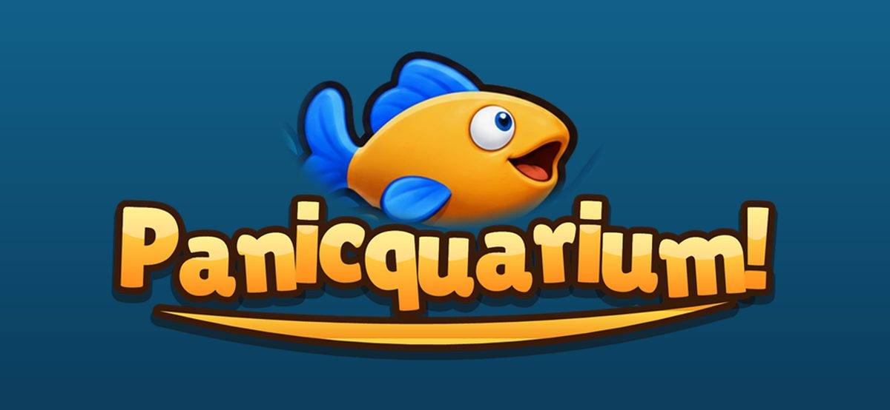
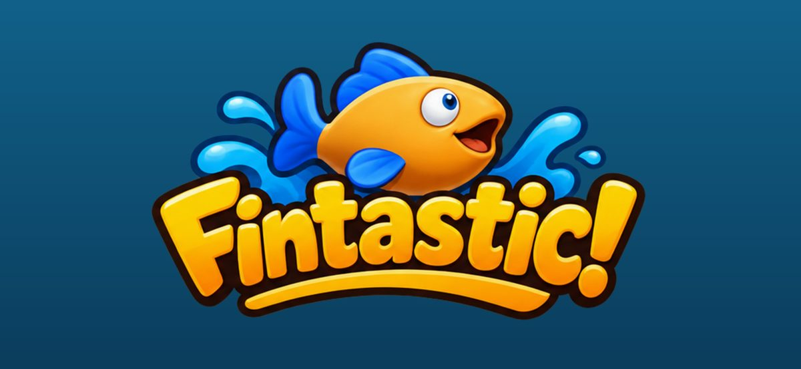
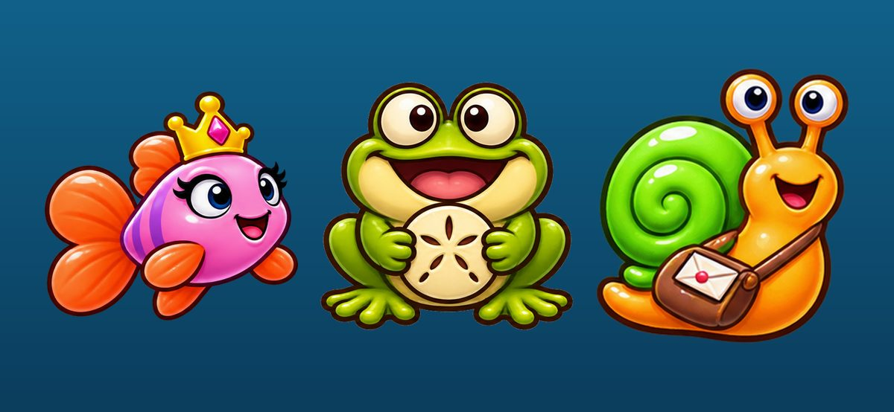
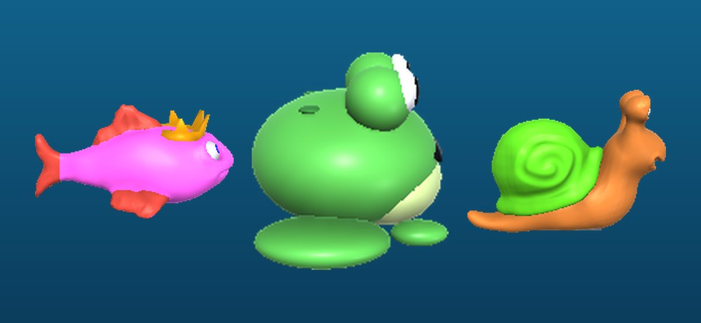
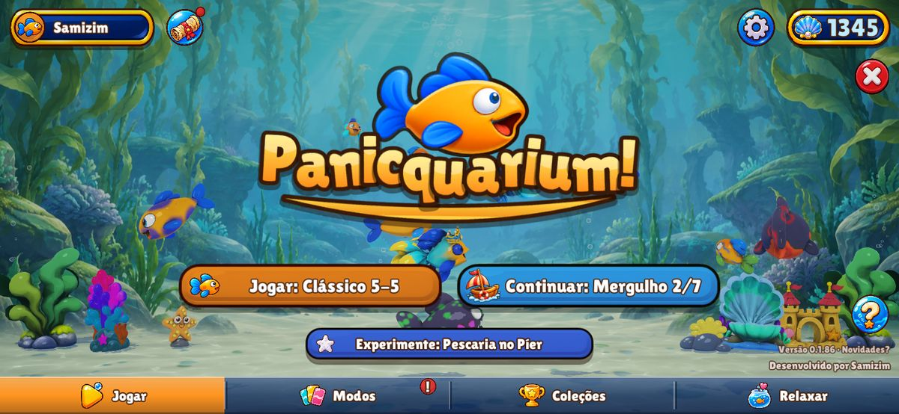
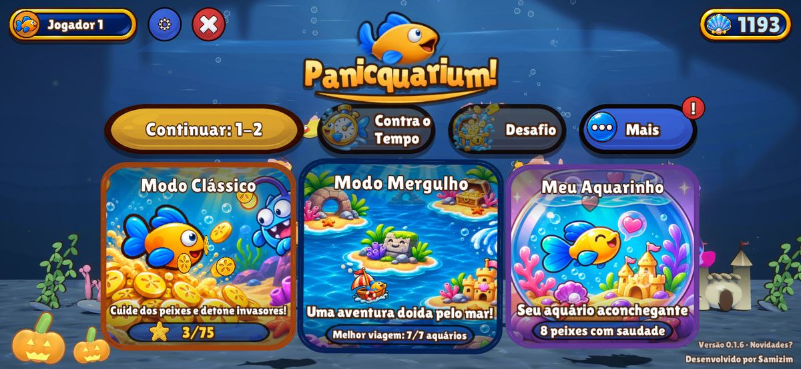

Como o Panicquarium! cresceu
O jogo nasceu em 23 de outubro de 2026 com o nome de Fish Frenzy e já trocou de escamas várias vezes. Arraste a divisória de cada imagem para comparar o antes e o agora. São capturas reais, sem photoshop de aquário.
Antes à esquerda, agora à direita. No celular: antes em cima, agora embaixo.
-
Fintastic! virou Panicquarium!
Três dias, três nomes: Fish Frenzy, depois Fintastic! e por fim Panicquarium!, porque pânico no aquário é o que não falta. O peixinho laranja sobreviveu a todas as mudanças.

Agora 
Antes -
Ajudantes de massinha ganharam pintura
Os primeiros retratos dos bichinhos eram modelos 3D lisinhos. Hoje a guppy rainha, o Sapeca e a Caracoleta são pintados à mão, com coroa, dólar-de-areia e até bolsa de carteiro.

Agora 
Antes -
A turma toda, antes e agora
Ajudantes e invasores começaram como bonequinhos 3D bem simples. Arraste e compare o primeiro modelo 3D de cada um com o modelo 3D de hoje: mais cara, mais carisma e muito mais tinta!
-
Um menu que respira
Os três cartões gigantes saíram de cena: agora o aquário aparece inteiro atrás do logo, com botões para continuar de onde você parou e uma barra de abas de vidro embaixo.

Agora 
Antes -
Todo menu ganhou roupa nova
Opções, pausa, recordes, figurinhas, novidades e os modos: os mesmos menus de antes, lado a lado com os de agora. Muitos ganharam até nome novo.
-
De uma parede de cadeados a aquários com crachá
A escolha de fases era um paredão de cadeados dourados. Agora cada aquário tem sua faixa colorida, as fases são escotilhas, e o cartão da fase mostra estrelas, recorde, visitantes famintos e a novidade da loja.
Agora Antes -
Cada aquário com sua vitrine
E mudou de novo! Agora os cinco aquários ficam lado a lado no topo: toque em um e as fases dele aparecem como escotilhas sobre a pintura do lugar, com o cartão da fase e a sua turma logo embaixo.
Agora Antes -
A loja na ponta dos dedos
A loja foi para as laterais, bem embaixo dos polegares: peixes à esquerda, melhorias e o baú do tesouro à direita, e o topo fica livre para o relógio. Quem prefere ainda escolhe a faixa no topo nas Opções.
Agora Antes -
Adeus, pergaminho
As dicas de invasor vinham num pergaminho com rolos de coral. Bonito, mas tapava o aquário. Agora são palavras grandes numa faixa escura e suave: leu, tocou, voltou pra briga.
Agora Antes -
Monte sua turma
Os ajudantes eram sombrinhas numa fileira apertada. Hoje cada um tem retrato, uma ficha com o que faz e um lugar na turma de três que você monta antes de cada fase.
Agora Antes -
A turma em destaque
Os três escolhidos agora ganham uma prateleira no topo, com nome e função, e todos os amiguinhos cabem numa grade só, sem precisar rolar.
Agora Antes -
Da estante ao armário de navio
Eram 14 troféus em cartõezinhos. Agora são 91, separados em grupos, de pé nas prateleiras de um armário de navio, com o escolhido brilhando no holofote.
Agora Antes -
Vitória, agora bem molhada
A tela de vitória ganhou missões, contas mais claras (comprados, crescidos, perdidos) e botões para espiar o aquário ou seguir direto para a próxima fase. O amiguinho novo continua com lugar de honra.
Agora Antes -
Um Mapa do Mar com portos
As rotas do Modo Mergulho ficaram mais fáceis de ler: portos marcados, legenda, rodadas contadas, e um toque em qualquer parada mostra o que tem lá antes de você zarpar.
Agora Antes -
O Meu Aquarinho acendeu a luz
O aquário particular era um fundo azul vazio. Ganhou cenários pintados com castelo, pedras e corais, cantinhos para pendurar decorações e uma turma de peixes bem mais variada.

Agora Antes -
A Loja de Conchas ganhou vitrine
Mais coisas à venda, e o preço virou o próprio botão: verde quando dá para comprar, cinza quando falta concha. Tem até poção de estrela e poção do amor.
Agora Antes -
Excursão do Cardume
Modo novo em folha: jogue as 5 fases de um aquário em sequência levando o seu cardume. Os 12 melhores peixes e metade dos dólares-de-areia vão junto de uma fase para a outra.
-
Mergulho de Cabeça
Algumas paradas do Modo Mergulho jogam você num aquário já lotado: peixes com fome, dólares no chão e invasor a caminho. É nadar ou nadar.
-
Notícias pelo cantinho
Missão feita, troféu novo, figurinha nova: os avisos agora deslizam em cartões no canto direito, sem tapar a ação. Até três de uma vez, e um toque some com eles.
E a maré continua subindo
O jogo muda quase todo dia. Volte depois para ver o próximo capítulo.